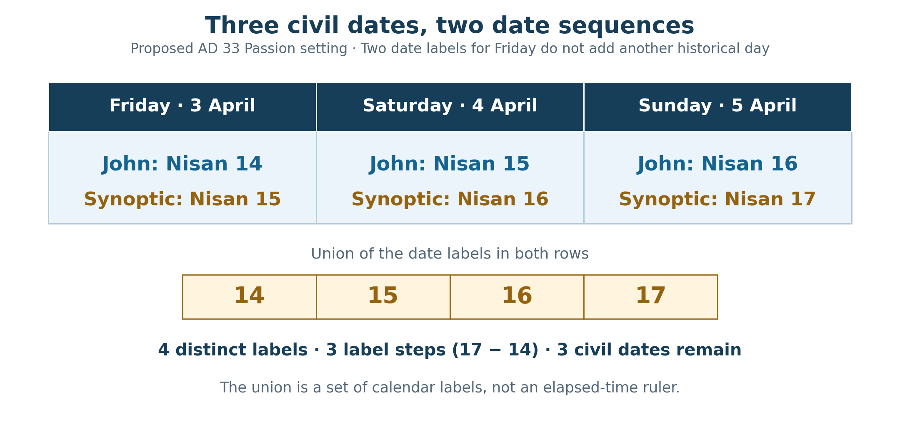
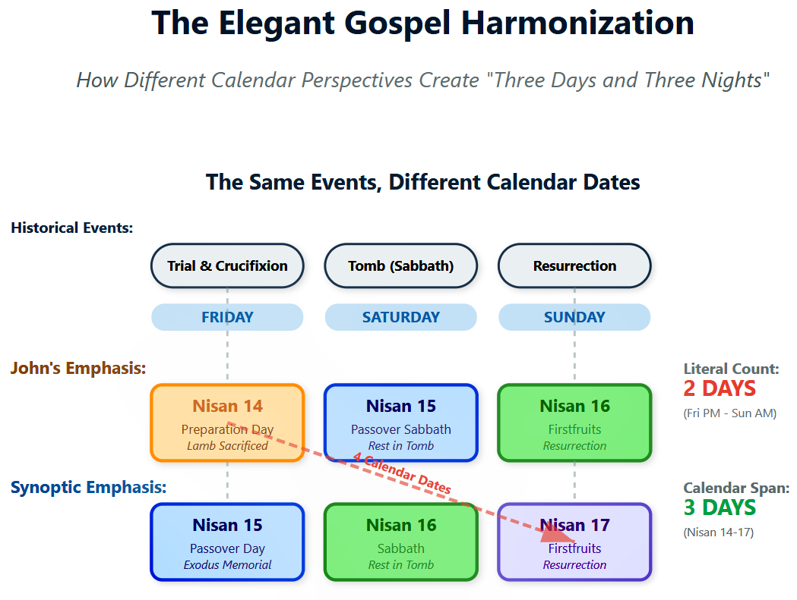
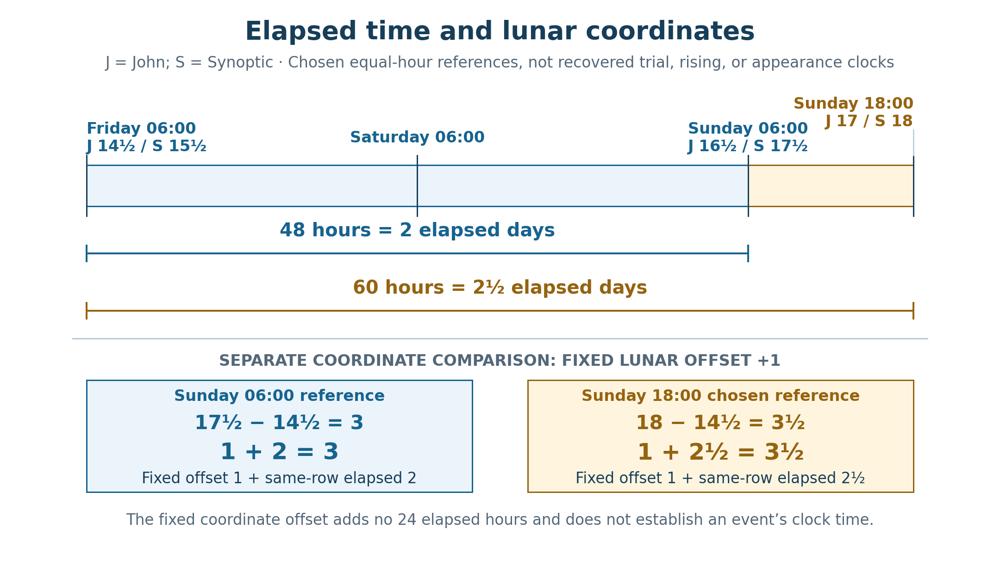
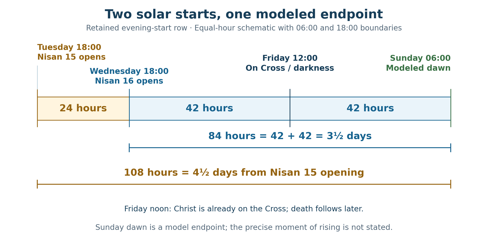

Book 1 · The Cross at the Center of Time · Chapter 13 of 18
The signs of deliverance and the breath that sends the witnesses
“For as Jonah was three days and three nights in the belly of the great fish, so the Son of Man will be three days and three nights in the heart of the earth.”
— Matthew 12:40
Christ gives Jonah's deliverance as a sign of His own. The comparison leads into the place where life appears to have been swallowed, and then beyond it. Jonah is brought out to bear witness. The risen Christ will stand among His disciples, breathe on them, and send them into the world.
I want to follow that movement through the different measures already before us. The Gospels speak of the third day. Daniel gives the divided week, and Revelation places three and a half days within the death and renewed life of the witnesses. These expressions have their own settings. As I read them together, I seek the Person whose work gives their likeness its meaning.1
John draws my attention to the people receiving that life. Mary comes to the tomb while it is still dark. By the evening, the disciples are behind locked doors. The Lord who has passed through death comes into their fear with peace. Their world is being remade from within the event they have scarcely begun to understand.
The calendar comparisons can serve that reading. They give us forms through which to contemplate the gathering of different testimonies. I believe the work at the Cross may reach more deeply still, giving time itself its order on either side of Christ's appointed hour. The figures below are ways of approaching that possibility while keeping the reported events and the measured intervals clear.
In this chapter
The sign and the third day
Jonah's prayer rises from the depths. He speaks of the realm of death, the waters closing over him, and his life brought up from the pit. The fish then releases him at God's command. In Matthew, Christ explicitly places that deliverance beside the Son of Man's descent and return.2
The Resurrection narratives also preserve the language of the third day. Luke records it in the angelic reminder at the tomb, and the travelers to Emmaus speak on Sunday of the third day since the events. Within the received Friday-to-Sunday reconstruction, Friday, Saturday, and Sunday are three included civil dates.3
That count is different from measuring seventy-two complete hours. Between Friday dawn and Sunday dawn, for example, two full days elapse. An actual burial later on Friday and discovery before dawn on Sunday give other endpoints. The precise instant of rising is unreported. I do not make a chosen dawn-to-dawn illustration into an exact measurement of Christ's stay in the grave.
Biblical time-language can place an inclusive third-day action beside a three-days-and-nights expression. Esther asks for a fast of three days, night and day, and then goes before the king on the third day. That example gives a reason to attend to the narrative's own counting rather than automatically substitute a modern seventy-two-hour requirement for every phrase. It does not make the sign of Jonah exhaustively explained by a rule applied without context.4
The sign concerns Christ's deliverance through death and the testimony that follows. Its chronological expression remains important, but I approach it as part of the whole scriptural witness. The differing Gospel date presentations add a further figure through which to contemplate that fullness.
Three civil dates and four calendar labels
The two lunar rows retain the same physical events while differing by one date. In the later reckoning used for John's presentation, Friday is Nisan 14. In the earlier reckoning used for the Synoptic presentation, it is Nisan 15. The difference continues through the Sabbath and the following Sunday.
Table 1 — The daylight dates of the same three civil days
| Civil date, AD 33 | Later lunar row | Earlier lunar row |
|---|---|---|
| Friday, April 3 | Nisan 14 | Nisan 15 |
| Saturday, April 4 | Nisan 15 | Nisan 16 |
| Sunday, April 5 | Nisan 16 | Nisan 17 |
Each lunar reckoning supplies three date labels. Combining the two sets gives four distinct labels:
{14, 15, 16} ∪ {15, 16, 17} = {14, 15, 16, 17}.

The six date assignments produce four distinct numerical labels and three steps between their first and last positions. They do not produce another elapsed civil day. These are the daylight labels; the Sunday-evening boundary begins new lunar dates.


The original diagram preserves the two Gospel date perspectives and their fuller combined figure. Its diagonal span compares calendar labels: four distinct labels, Nisan 14–17, with three steps between them. The “2 DAYS (Fri PM–Sun AM)” label is a schematic Friday-to-Sunday description, not an exact forty-eight-hour burial interval. Inclusive dates, cross-row label counts, and elapsed twenty-four-hour days remain distinct, as explained in this chapter.

Chapter 4 retained this added figurative position as part of the proposed harmony. It is not peculiar to Friday alone: all three civil dates carry paired labels. The fuller figure arises from bringing the two rows together.
I see a positive contribution in that combination. The earlier presentation places the covenant meal within the feast; the later presents Christ's death against the preparation of the Passover. Both concern the same Lord giving Himself. The enlarged calendar figure lets the two perspectives contribute to a common testimony while their date relationships remain visible.5
The names of the communities and traditions still matter. The proposed Galilean and Pharisaic associations of the earlier reckoning, and the Judean Temple and Sadducean associations of the later one, retain the historical qualifications given in Chapter 4. I do not turn a numerical arrangement into an otherwise missing record of a proclamation or sacrifice. I seek the gathering of those inherited perspectives in Christ.
Zechariah's day known only to the LORD offers a further image for contemplation. In that prophecy, evening brings light. I hear an affinity with the victory toward which the Passion moves, but the passage itself does not identify a pair of Nisan dates or command that their labels be added. Its light belongs first to the scene Zechariah describes.6
Two elapsed intervals and the added calendar offset
The fuller lunar figure can be expressed more precisely by including progress through the date. I use the same continuous date coordinates introduced in Chapter 10. A date that began at 18:00 has reached its halfway point by 06:00 the following morning. The two lunar rows remain one date unit apart at every instant.
For this comparison, take Friday at 06:00 as a chosen reference, Sunday at 06:00 as a modeled dawn, and Sunday at 18:00 as a chosen evening boundary. These are illustrative clock positions, not recovered hours of judgment, Resurrection, or appearance.
Table 2 — The selected lunar coordinates
| Model reference | Later lunar coordinate | Earlier lunar coordinate |
|---|---|---|
| Friday 06:00 | 14½ | 15½ |
| Sunday 06:00 | 16½ | 17½ |
| Sunday 18:00 | 17 | 18 |
Measured within either row, Friday dawn to Sunday dawn is two elapsed days. Friday dawn to the chosen Sunday evening is two and a half:
48 ÷ 24 = 2; 60 ÷ 24 = 2½.
Now make a different comparison: take the opening coordinate from the later row and the closing coordinate from the earlier row. The resulting outer spread includes their fixed one-unit displacement:
17½ − 14½ = 3 = 1 + 2.
18 − 14½ = 3½ = 1 + 2½.

The physical intervals are 2 and 2½ days. Comparing the later row's starting coordinate with the earlier row's ending coordinate adds their fixed one-unit offset to the representation. The resulting 3 and 3½ are cross-row coordinate spreads, not extra hours of burial.

This gives the additional figurative day a defined role. I have not found another twenty-four hours concealed between Friday and Sunday. I have compared the same history through two date origins and retained their difference in the outer figure. The first span gives three represented units; extending the endpoint to the chosen evening gives three and a half.7
I place the first beside Jonah's sign and the second beside the renewed life of Revelation's witnesses. These are interpretive correspondences. Matthew does not prescribe the coordinate operation, and John's evening appearance does not supply an exact 18:00 clock reading. Their contribution is to the larger reading I am proposing, rather than a proof that one numerical technique compels every Gospel detail.
John's about-sixth-hour notice remains before Pilate. A midnight-based reading of that hour would place it near dawn, but whether John uses that reckoning is disputed. The dawn reference here therefore remains a selected point for comparison. It neither relocates the reported notice onto the Cross nor settles its relation to Mark's third-hour crucifixion notice. Noon continues to mean Christ already on the Cross when darkness begins.8
Watching through the night
Mark preserves four watches in Christ's instruction to remain awake:
“Therefore keep watch, because you do not know when the master of the house will return—whether in the evening, at midnight, when the rooster crows, or in the morning.”
— Mark 13:35
The command concerns readiness in the face of an unknown return. I take its sequence as an invitation to attend to the night, without making it a command to assign every Passion event to a calculated watch.9
The fourfold form can be shown through the familiar schematic twelve-hour night:
Table 3 — Four watches in a schematic night
| Watch designation | Illustrative clock interval | Length in the model |
|---|---|---|
| Evening | 18:00–21:00 | 3 hours |
| Midnight | 21:00–00:00 | 3 hours |
| Rooster crowing | 00:00–03:00 | 3 hours |
| Morning | 03:00–06:00 | 3 hours |
These settings divide a modeled night evenly. The passage names the watches without reporting each of those clock boundaries. Actual sunset, dawn, and seasonal hours require their own historical and astronomical setting.
The disciples' experience gives the command its force. At Gethsemane they fail to remain awake. Peter's denial is marked by the rooster. At the tomb, the first visitors approach through darkness toward morning. The hours are inhabited by people whose faithfulness is being tested, broken, and restored.10
I hear John's winter and night notices within that movement. At Dedication the season is winter; at the supper Judas goes out into the night. The two short Greek notices join a form of “was” to the season or darkness they name. They are related literary signals, rather than an identical sentence repeated word for word.
The common-calendar comparison from Chapter 12 remains available beside them. From the proposed Tabernacles origin, three common years and seventy days reach the Dedication boundary: 1,080 + 70 = 1,150. Another 110 reach the selected Nisan 15 boundary: 1,150 + 110 = 1,260. Those are schematic feast coordinates, not observed day counts between John's reported encounters.11
The hostility at Dedication anticipates the confrontations of the coming Passion. What draws me is the movement toward His hour. The One who gives life walks into the hostility of those who reject Him. The night is permitted its place, but it does not determine the outcome.
The room and the breath of life
John's Resurrection evening gathers the disciples behind locked doors. Their fear has enclosed them. Jesus stands among them, speaks peace, and shows them His hands and side. The joy of recognition follows the disclosure of His wounds. Then He sends them as the Father has sent Him and breathes on them.12
The breath points toward new creation. The Greek verb John uses for Christ's breathing is also used in the Greek Genesis account when God breathes into the first man's face. Here the risen Lord breathes upon those He is commissioning and tells them to receive the Holy Spirit. I see the beginning of a renewed human witness, brought to life in relation to Him.13
Revelation supplies a corresponding scene. Its two witnesses complete their testimony, are killed, and remain exposed for three and a half days. Then the breath of life from God enters them, and they stand. Their story moves from testimony through death to renewed life and ascent.14
The language of the two passages is related without being identical. John describes Christ breathing on the disciples and speaking of the Holy Spirit. Revelation describes the breath of life entering the witnesses. Ezekiel's vision of breath entering the slain gives the latter scene another scriptural setting. I read a shared divine action across these forms: God makes living witnesses where death or fear appeared to have silenced them.
In this comparison, the locked room becomes a figurative tomb of fear. The disciples are alive, but Christ enters their enclosure and sends them out as witnesses. The proposed three-and-a-half-unit coordinate spread gives this scene a numerical likeness to Revelation's witnesses receiving life. Revelation's three and a half days remain the death interval of those witnesses in their own vision.
Jericho offers another image of enclosure and opened possibility. The Greek Joshua describes a city shut up and fortified; John describes doors that have been closed. Their words share a language of closure, but the city passage uses a compound form, not the identical Greek word in John.15
The narrative comparison remains fruitful. A barrier that seems final cannot exclude God's action. At Jericho the people shout after the appointed circuits. In John, Christ is present among His fearful disciples and gives them peace. The Gospel does not describe the room's walls collapsing, nor does it count seven days of entombment for the disciples. The likeness concerns divine access and a people released into their calling.
The traditional Palm Sunday to Resurrection Sunday sequence spans seven date intervals and eight included civil dates. Its shouts of welcome and the later commissioning can be contemplated together, with the time of each event left as the narratives give it. An exact seven-day hour-to-hour interval would require corresponding event clocks that the Gospel has not supplied.16
The Lord's gift reaches beyond that evening. John joins breath, sending, and the dealing with sins. The renewed witnesses are entrusted with a work of reconciliation. The chapter's numbers find their purpose here: the risen Christ gathers people who will carry His peace into the world.
The faithful courses above
The sun and moon also belong within the witness I am following. In 1 Enoch 41:5 they are described as keeping their appointed courses and faith with one another under the oath that binds them. The image gives an ancient setting for the heavens as an ordered and faithful company.17
Revelation calls its witnesses two olive trees and two lampstands. It does not explicitly identify them as the sun and moon. I bring the two images together as a typological reading: the faithful luminaries give a heavenly figure for testimony, while God's witnesses carry His word within history. The Repository also permits the luminary-and-lampstand comparison at that interpretive level.
Daniel sees two figures on opposite riverbanks and another above the waters who swears by the One who lives forever. Revelation shows the mighty angel with a face like the sun raising his hand in an oath. These scenes place testimony and appointed completion under divine authority. Their shared imagery can deepen the comparison without making every pair of figures one interchangeable set of characters.18
The calendar differences then take on a further meaning for me. The sun and moon do not have to perform the same motion in order to belong to one created order. Their faithful differences make the calendar question possible. I seek a corresponding gathering in Christ: witnesses retaining the features of their testimony while receiving their place in the whole.
That gathering is the hope of this book. A figurative calendar arrangement may bear witness to an actual divine work whose reach exceeds our measurements. I believe the Cross may give the earlier pattern its form as well as open the future toward its fulfillment. The celestial courses, the prophetic figures, and the human witnesses can be contemplated within that purpose.
The solar frame and its true opening

In the third row, Wednesday evening closes Wednesday, Nisan 15, and opens Thursday, Nisan 16. The fourth row uses the ending-weekday convention described in Chapter 10; the chart marks the Sunday-morning boundary as the end of Day 19 and start of Day 20. Its “Noon Crucifixion” label locates Christ on the Cross at the onset of darkness. Its “Resurrection” line serves here as the modeled dawn reference; the Gospel does not report the instant of rising.
The regular solar calendar supplies a final comparison, already established by the authorized chart in Chapter 10. The important boundary is Wednesday evening. It closes solar Wednesday, Nisan 15, and opens solar Thursday, Nisan 16. From that selected opening to modeled Sunday dawn lie eighty-four hours:
42 + 42 = 84 hours = 3½ elapsed model days.
Friday noon stands at their midpoint. Christ is on the Cross; darkness begins. Death follows later. The Sunday dawn remains a model reference, while Mary has already found the stone removed during the preceding darkness.19

Nisan 15 opening to modeled Sunday dawn gives 108 hours. The selected Nisan 16 opening gives 84, divided 42 + 42 at Friday noon. The 06:00/18:00 clocks are schematic; the diagram does not report the instant of Resurrection or make the whole frame an elapsed burial duration.

The eighty-four-hour count is literal arithmetic within its chosen model. Its selection and theological use are additional steps. Beginning instead at the actual Nisan 15 opening, Tuesday evening, gives twenty-four more hours: 24 + 84 = 108. Calling Wednesday evening the opening of Nisan 15 would erase the distinction the chart already preserves.
The four-day comparison with Lazarus likewise keeps its own boundaries. The regular solar row puts Nisan 14 daylight on Tuesday, when its corresponding Passover sacrifice date would fall, followed by Nisan 15 at Tuesday evening. Exodus distinguishes selection on the tenth from slaughter on the fourteenth. Their same-clock date positions are four elapsed days apart; neither identifies a four-day period from Palm Sunday to Resurrection evening.20
A Wednesday-afternoon reference at 15:00 to Sunday evening at 18:00 gives ninety-nine hours. Wednesday 18:00 to Sunday 18:00 gives ninety-six. Those examples show why a general phrase such as “afternoon to evening” cannot establish four complete days. Lazarus's four days in the tomb remain the explicit notice in his own story, as Chapter 9 explained.
I can still hear Lazarus beside the disciples who receive Christ's breath. A voice calls one man out of the grave; the risen Lord sends a living company out of fear. Their relationship rests on the Giver of life, rather than on an unreported sacrifice hour or an invented four-day confinement of the disciples.
The witnesses gathered in the risen Lord
The layers now have definite places. Jonah's sign belongs to Christ's descent and deliverance. The Gospel third-day testimony retains its narrative count. The paired lunar coordinates supply the proposed three- and three-and-a-half-unit figures. The selected solar frame gives eighty-four model hours. Revelation's witnesses receive life within their own prophetic scene.
I do not have to make those measures identical in order to see them drawn toward one fulfillment. John repeatedly brings me back to the Lord who is present: at the emptied tomb, among the fearful disciples, and in the gift of the Spirit that accompanies their sending.
That presence gives the inquiry its purpose. The One who gives His life is the One who gives life to His witnesses. The order I seek in the calendars belongs within that larger act of reconciliation. I believe it may reach into the order of creation itself, so that past and future receive their deepest relation from the Cross and the risen Christ.
The next chapter turns from these Passion measures toward Moses, Joshua, and Aaron. Their lifespans and their work as prophet, conqueror, and priest will provide further ways to contemplate the Son who fulfills what they began. I carry forward the same care over the units, and the same hope that the many witnesses can be heard together in Him.
Sources and notes
1. Matthew 12:38–42; Luke 11:29–32; Daniel 9:27; Revelation 11:3, 7–12. Matthew explicitly gives the three-days-and-nights comparison; Luke emphasizes Jonah's sign and the response to the greater One. The separate expressions are not assumed to state one identical elapsed duration. Return to text
2. Jonah 1:17 and 2:1–10. Jonah's prayer uses death, depths, and pit imagery; the chapter does not require a separate historical assertion that Jonah had physically died. Matthew supplies the explicit Christological comparison. Return to text
3. Luke 24:7, 21, 46; Mark 15:42–47 and 16:1–6; John 20:1. Friday-to-Sunday is the adopted received reconstruction. The day-count, the time of burial, the discovery, and the unreported instant of rising remain distinct. Return to text
4. Esther 4:16 and 5:1. The text places the three-days/night-and-day request beside an action on the third day. This is a contextual comparison, not a universal claim that every ancient interval was inclusive or every day-and-night expression meant the same thing. Return to text
5. Chapter 4's combined set is {14, 15, 16} ∪ {15, 16, 17} = {14, 15, 16, 17}. It gives six assignments, four unique labels, and three successive label steps. The same three civil dates underlie both rows. Historical group assignments remain proposed, as stated in Chapters 4 and 10. Repository File 13 controls the preferred AD 33 and possible AD 30 Passion settings; the diagrams here use AD 33. Return to text
6. Zechariah 14:6–9. BSB verse 7 reads, “It will be a day known only to the LORD, without day or night; but when evening comes, there will be light.” The verse does not explicitly identify Friday's two Nisan labels. The Passion affinity is the author's theological reading. Return to text
7. The model lunar origins are later J1 = March 20, AD 33, at 18:00 and earlier S1 = March 19 at 18:00. At Friday April 3 06:00, coordinates are J14½ / S15½; at Sunday April 5 06:00 they are J16½ / S17½; at Sunday 18:00 they are J17 / S18. The same-row differences are 2 and 2½ days. Mixed-row endpoint differences are 3 and 3½ units because S is always J + 1. This compares date coordinates with different origins, not two newly discovered physical event boundaries. At exact Sunday 18:00 new evening dates begin; the daylight union in Figure 1 must not be extended unchanged past that boundary. Return to text
8. John 19:13–16; Mark 15:25, 33–37. John's about-sixth-hour notice is before Pilate. A midnight-based interpretation and a daylight-hour interpretation yield different clock readings; the chapter does not settle that debated hour reckoning or claim intentional ambiguity. Moving a lunar month start by one day does not itself reconcile the Gospel hour notices. Friday 06:00 is a chosen model reference; noon marks darkness with Christ already crucified, and death follows the ninth-hour cry. Return to text
9. Mark 13:32–37. The quotation follows BSB verse 35. The four names correspond to a fourfold night-watch arrangement. The evenly spaced 18:00/21:00/00:00/03:00/06:00 clock boundaries are a modern schematic display; the text's command concerns watchfulness, not a prescribed forensic method. Return to text
10. Mark 14:32–42, 66–72; John 20:1. The failure to watch, the rooster, and the approach to the tomb belong to the narrated sequence. This does not establish precise modern clock times for Peter's denials or the women's arrival. Return to text
11. John 10:22 and 13:30; Repository File 69, §2.10. The Greek winter clause is χειμὼν ἦν, and the night clause ἦν δὲ νύξ: related short descriptions, not identical wording. The schematic Tishri 15 AD 29 → Kislev 25 AD 32 → Nisan 15 AD 33 gives 1,150 then 1,260. The Gospel does not identify an exact ministry start or day within Dedication for this encounter. The feast's opening is the numerical reference, not necessarily the reported supper's precise clock/date in each lunar row. The unchanged-origin 2,300 and 2,520 midpoints remain 110 schematic days apart. Return to text
12. John 20:19–23. John reports the first-day evening, locked doors, fear, peace, wounds, joy, sending, and the Holy Spirit. The disciples' restoration is a theological description of living people; the text does not call them physically dead witnesses. It supplies no exact 18:00 appearance time. Return to text
13. John 20:22 and Genesis 2:7. The breathing verb ἐνεφύσησεν appears in John and the Greek Genesis passage. The new-creation reading draws on that lexical echo and the narrative setting; it is not a claim that John's full sentence reproduces Genesis verbatim. The BSB's “Receive the Holy Spirit” is Christ's explicit command in the scene. Return to text
14. Revelation 11:9–12 and Ezekiel 37:5–10. Revelation’s πνεῦμα ζωῆς … εἰσῆλθεν describes breath/spirit of life entering. It is not the verb ἐνεφύσησεν of John 20:22. The conceptual connection is retained without an exact-word identity. File 69, §5B.8 uses Revelation’s testimony, death, resurrection, and ascent as typological corroboration within its Enoch–Jacob comparison. Here I likewise retain a typological correspondence; the witnesses’ stated death interval is not a new measure of Christ’s burial. Return to text
15. Joshua 6:1, 20 and John 20:19. John uses κεκλεισμένων from κλείω; Greek Joshua uses συνκεκλεισμένη, also spelled συγκεκλεισμένη in editions, from the compound συγκλείω, alongside fortified-city language. The closure imagery is related, but the precise forms and lexical entries are not identical. The room's ‘tomb’ and the opening of fear are authorial figures, not Gospel descriptions of a wall collapse. Return to text
16. John 12:12–15 and 20:19–23. Traditional Sunday March 29 → Sunday April 5, AD 33, gives seven elapsed date intervals and eight included dates. Exact event-to-event hours would require the entry and appearance times, which are not supplied. Joshua's seven-day circuit belongs to its own narrative. Return to text
17. 1 Enoch 41:5, R. H. Charles translation, for the sun and moon's appointed courses and oath-bound faithfulness. Revelation 11:4 expressly calls its witnesses two olive trees and two lampstands. Their identification with luminaries is an interpretive connection, not an explicit statement in Enoch or Revelation. Repository File 22, §6 permits luminary/lampstand typology without turning it into established identity. Return to text
18. Daniel 12:5–7 and Revelation 10:1–7. Daniel has two riverbank figures and the linen-clothed figure above the waters; Revelation's mighty angel has a sunlike face and takes an oath. These are related testimony/oath images, not an explicit equivalence of all their persons. Return to text
19. Chapter 10's authorized original main chart remains unchanged. The evening solar origin E1 is Tuesday March 17 at 18:00; E15 begins Tuesday March 31 at 18:00, and E16 Wednesday April 1 at 18:00. To Sunday April 5 at 06:00 they give 108 and 84 elapsed model hours. Friday April 3 noon divides the latter into 42 + 42. In the phased morning overlay P, Day 19 ends and Day 20 begins at exact Sunday 06:00; standard morning M instead changes 18 → 19. See Repository File 12, §6.3.3 for the standard Wednesday-morning anchor. The chapter's supporting figure does not replace the authorized main image or move its original day divisions. Return to text
20. Exodus 12:3–6; John 11:17, 39–44. Selection is day 10 and slaughter day 14: four same-clock date intervals, five included labels. In the selected evening solar row, day 14 daylight is Tuesday March 31. Wednesday 15:00 → Sunday 18:00 gives 99 hours; Tuesday 15:00 → Sunday 18:00 gives 123; Wednesday 18:00 → Sunday 18:00 gives 96. The 15:00 and 18:00 examples are chosen clocks, not documented sacrifice or appearance hours. No four-day disciple confinement or four-day Palm-Sunday-to-Resurrection interval is inferred. Return to text
Scripture quotations are from the Berean Standard Bible (BSB), public domain.